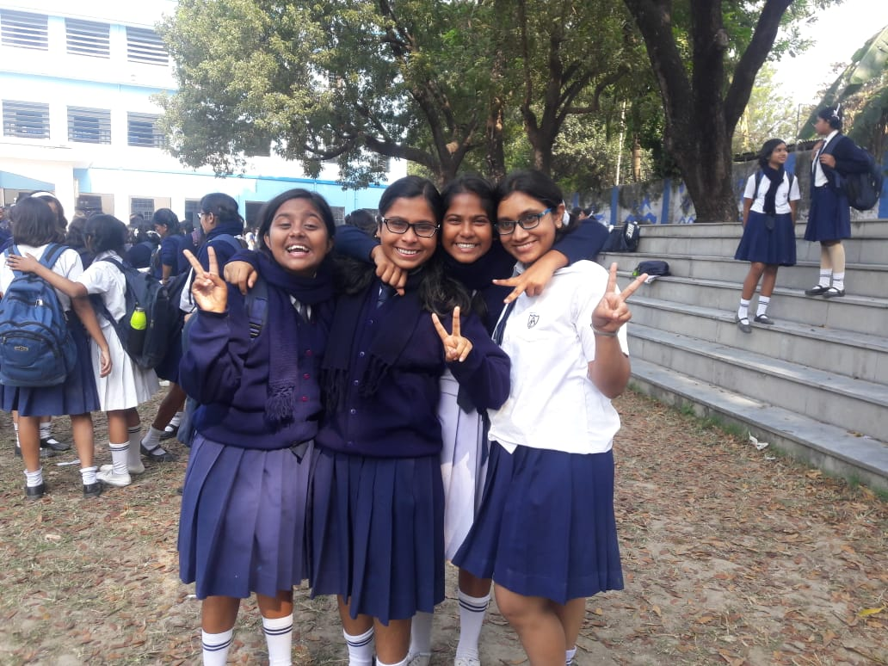
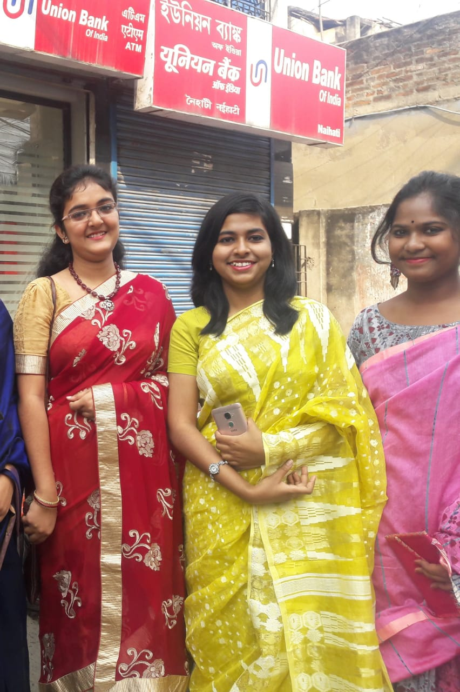

Nandana The Ultimate No
Nandana The Ultimate No
Published on June 5,2020
Paragraph moumitar bday er jonno. Its been a long long time since we last met in person, three years🥺. The last time we were physically present together and sharing a GOOD laugh was way back in class 10. But believe me Mou, i still feel comfortable talking to you like i always did, it feels like it hasn't been three long years that i haven't met you. Yes, both of us have different lives now, different people around us, different priorities and we hardly talk to each other, but whenever we do its wonderful. Guess this is what real friendship means. Anyways lots of sentimental talks, lets get to the point: Wishing you a Very Very Happy birthday in this Lockdown. This birthday is going to be special (All thanks to Corona😅). But given its you, you can still enjoy your part in this condition, Moumita can laugh and enjoy in any difficult situation and that's one very good quality you have. Always keep laughing like this, be happy, stay safe and yes crack Neet, and i'll be waiting for you to join my college😏. Lots of love and best wishes. From yours Nandu😁
Rai
Published on May 27,2020
Ki diye suru korbo janina karon tomar byapare lekha suru korle thamte parbona.Acha to moumita didi tumi amader (titli ,kakon , ami ,tumi ) modhe chile sob cheye hasi khusi,talented,creative and most importantly 'BORO CHITIYAL' . Choto khato meaningless karoneo Ki kore haste hoe tomar theke sekha uchit ekhon ami motamoti sikhechi tomar student ami .Tomar mathar KYARA gulo j sob somoy active thake seta sobai jane , mone ache tumi gan baniyechile '' I am a disco KYARA KYARA tudu tudu , zindagi mera KYARAAA , Mein KYARA ka deewanaaa ..." 🤣, r oi gan ta " ure dil BEFIKRE niche se GU nikle" eisober credits tomar . Tomar paglamir jonnoi bodhhoe saradin school koreo tired lagto na train e ferar somoy . Koto khilli korechi train e sei antakshari khela chechiye gan gawa konodino bhulbonaa . Tumi school charar por sotti tomae onek miss korechi. Eto miss korechi ami tomake follow korte suru kore diyechilam oi paglami wala vibes anar jonne . Onek change hoyechilam ami ekhon khub hasi ager moton gomra nei r baje jokes o crack kori r prochondo bhatt boki tomar moton jate bakirao khusi thake jmon tumi rakhte amadrr . Thank you sob kichur jonne , jani ektu besi bhalo bole felchi tomar birthday bole kotha noile boltam na ...😆. Tumi khub valo theko khusi theko r erokomi haste theko r paglami chaliye jeyo sarajibon ... A VERY HAPPY BIRTHDAY TO YOU ...তোমার বনু রাই❤❤❤💩💩💩


Titli
Posted on may 22,2020
Amr kache eto memomries ache tomar sathe likte gele it will be endless karon ektar por ekta monei porte thakbe 😍😍😍😍.... last vc te I thought maybe I'll be chucked out but tumi abr ager moton paglamo kore again made me feel like a family like those good old days😌😌☺☺tq🥰...Trpr mone ache tomar shei I was actually more exited that u r gonna chng to a coed schl 🤣🤣shei roj gie jiggsh krtm kota lok line marlo tomake and tumi bolechile ekta mota chele tomaye line mare lololol😆😆😆 r ekhn dekho u got a so caring and loving wala hubby 🤭😉😜biyete jodi na dako tahole bari to shamnei gie tin tola chad theke dhakka mere phele debo puro bujhlaaaa😈😈👻👻....Nd rememeberd jokhon tua didir bari porte jetm ami sudhu ektai jinish er jonno wait krtm je kokhon didi charbe r ami niche tomar sathe gie kotha bolbo even majhe majhe to makeo deri kore ashte bltm🙊🙊.....So at the last idk when this lockdown will be over completely then I really want to meet u with our whole paglamo acb grp (yes even pinky aunty😌🥰)...R tumi shobshomoye amr jaaan amr jigd ka tukra thakbe😍😍😍😍 I love u very much nd enjoy ur b-day like a neka pagla queen which u always was and dare u change 😜😜🤪🤪.... HAPPY BIRTHDAY TO U 🎼HAPPY BIRTHDAY TO U 🎼HAPPY BIRTHDAY TO MOUMITA DIDI 🎼HOW OLD R U😜😜 Signing off titli❣❣.....
Debpornahh
Published on May 28,2020
Dear Moumita, I know u since 11 yrs , and in this period I have seen u cry , I've seen u getting angry I've seen u laughing ur ass out in ur lame jokes . Their will be a lot many people who will come into ur life . They will come and go . But the memories with ur childhood buddies will always be remembered. U are my beautiful mistake like . From doing crazy things to clicking those crazy pictures I cherish every moment spend with u... sometimes u act like a child and I have to tolerate that but never mind hota hai. After 40 yrs when u are an old lady with white hairs and wrinkles on ur face sitting on an armchair and telling ur grandchildren about all the stories of mischief that u did that u did in ur preteen yrs, how did u fell in love in ur teens and of course about me. U won't forget me right ? I know u won't ( Jodi bhule jash barite eshe raid marbo) ..remember those blue house charts ? God u were so lazy back then 🥱. I still remember and occupying the full compartment with acb girls all around while returning home was the best part of the school memories.....I love u loadss...and miss u idiot happy birthday ...njoy ur day...and this boy took a lot of pain to do this so I thank him instead of writing a whole paragraph in a status which will go away in 24 hrs it's better to keep it here which will stay with u forever . Couple of yrs later we will all will stay in different places occupied with our professions ..not getting time to call or text. But still I wish whenever we meet things won't be awkward between us . No formalities. Our behaviour should make people believe that " ei duto mohila paglachoda ". When u get married I will be the maid of honour. Njoy ur special day with ur family. Rather than wishing u happy birthday I will thank aunty for giving birth and raising such a piece of shit . I hate ya and u know my love is in my hate...be happy always . Never change for anyone all the best for future .❤❤❤❤❤❤❤

Rudrani
Rudrani
Published on May 26,2020
Happy birthday dear many many happy returns of the day and i hope that ur special day will bring u lots of happines love and joy . Stay safe and enjoy lockdown birthday Love u 😘😘
Bidisha
Published on May 30,2020
Happy birthday Moumita.Many many happy returns of the day❤❤❤ Enjoy your day to the fullest and may all your wishes get fulfilled (ps:joldi doctor hye ja r amdr free teh check up korbi) treat chaiii and jodio tui ajkal patta dish na but still I love you ❤❤❤❤❤❤❤